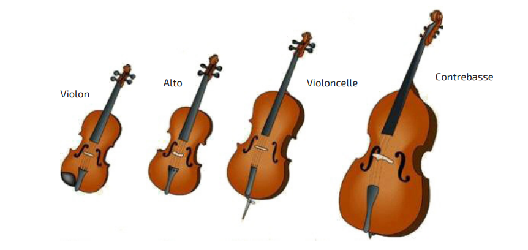
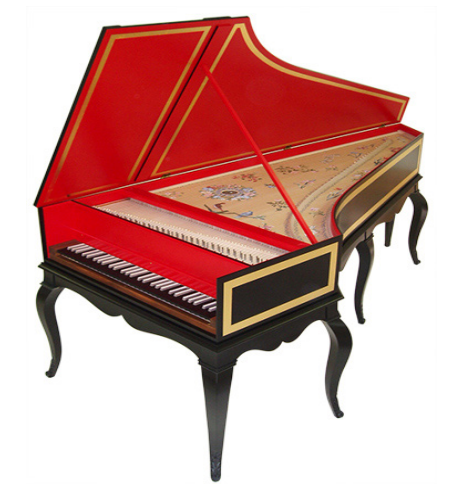
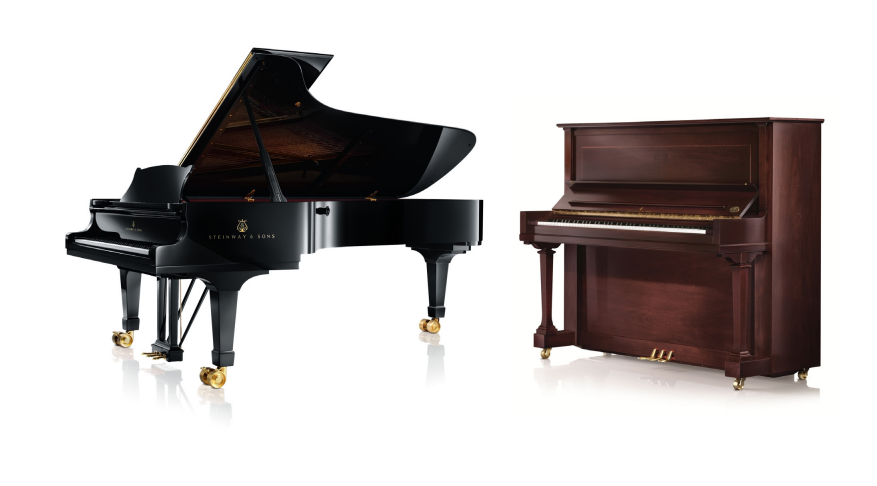

String Instruments
Strings play an essential role in classical orchestras. Violins, violas, cellos, and double basses are used for rich and expressive sounds.
These four instruments each have unique characteristics. For example, the smaller the instrument, like the violin, the higher its pitch. Therefore, the violin is the highest-pitched of the four, while the double bass is the lowest.
Having these four instruments with different pitches in an orchestra creates harmony and evokes different emotions depending on the desired tone.
There are also other types of string instruments. In classical music and orchestras, we often find the harpsichord and piano.
Specific to European music, harpsichords reached their peak and inspired a vast repertoire during the 17th and 18th centuries, before falling out of favor throughout the 19th century. They have gradually regained popularity among musicians and audiences since the early 20th century.
The piano, much more recognized in modern orchestras and as a solo instrument, belongs to the struck string instruments. It is therefore an intermediary between string instruments and percussion.
